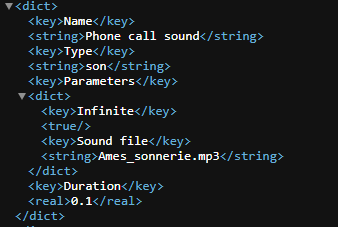
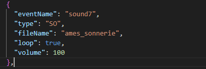
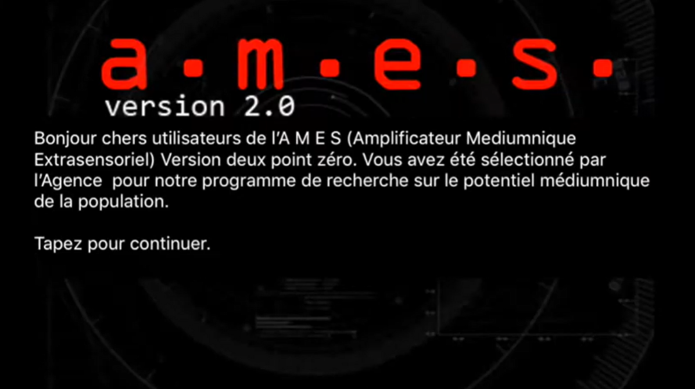
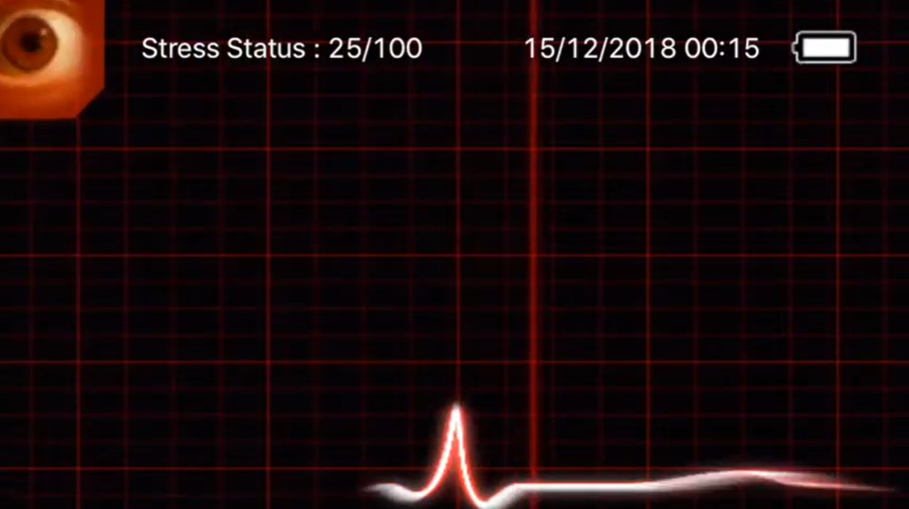
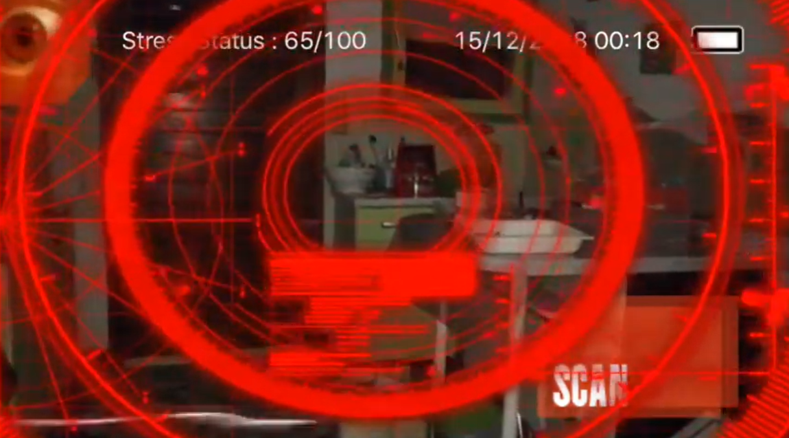
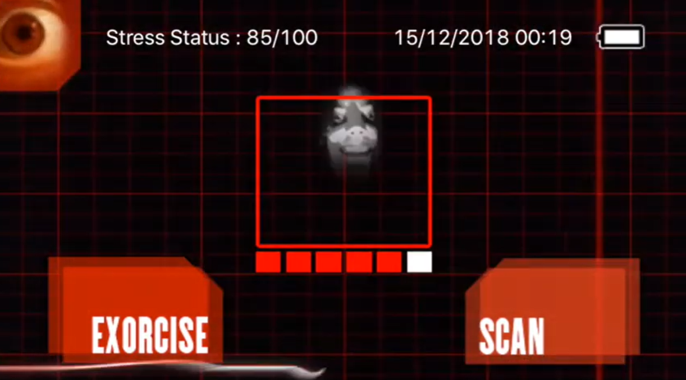
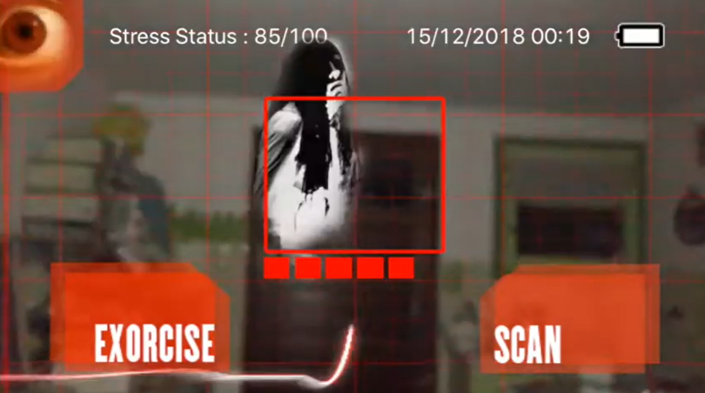

A.M.E.S
Contexte
Ce projet a été réalisé dans le cadre d'une SAE (Situations d'Apprentissage et d'Évaluation). Notre objectif était de faire le portage de jeu A.M.E.S sur appareil Android. Pour le mener à bien, nous étions 4 étudiants.
Qu'est-ce que A.M.E.S ?
A.M.E.S est un jeu de chasse aux fantômes en réalité augmentée créé en 2014 par Jean-Philippe Farrugia et Pa Ming Chiu. Il a originalement été développé pour la plateforme iOS seulement.
Le concept du jeu est simple : exorciser les fantômes.
Lorsqu'on lance le jeu, on doit suivre une série de dialogues qui nous mettent dans l'ambiance. Ensuite, des fantômes commencent à nous attaquer et nous sommes plongés dans le noir. Avec la caméra, nous devons donc nous déplacer dans notre environement pour viser ces derniers. Une fois à l'intérieur du curseur, nous devons appuyer sur "Exorcise" pour le faire disparaitre, ce qui allume la lampe torche pour donner un effet que nous attrapons le fantôme avec la lumière.
Le jeu est basé sur un gestionnaire d'événements. Il éxécute un script en lisant les événements un par un. Voici la liste de tous les événements existant :
- Caméra : permet d'activer/désactiver la caméra
- Bouton : créer un bouton
- Texte : affiche du texte
- Son : joue un son
- Animation : joue une séquence d'images
- Texte animé : affiche du texte lettre par lettre
- Image bougeant : affiche et déplace une image
- Date : affiche un texte avec la date actuelle
- Torche : permet d'allumer/éteindre la lampe torche
- Scan : Indique si on doit afficher ou non le bouton "Exorcise"
- Ghost : Affiche un fantôme et défini son comportement
Chaque événement possède des paramètres afin d'indiquer sa position, sa durée, le fichier à utiliser, ...
Le projet
Les essais précédents
Avant nous, plusieurs groupes avaient déjà essayé de faire le portage du jeu, seulement, aucun n'a réussi à le terminer entièrement. Le groupe ayant été le plus loin a utilisé le langage Flutter et l'a fait en 2024.
Notre essai
Pour démarrer ce projet, nous avions besoin de choisir une technologie adapté au multiplateforme. Comme nous connaissions tous bien le langage Kotlin, nous avons décidé d'utiliser KMP (Kotlin MultiPlatform). Afin de s'organiser, nous avons suivi différentes étapes :
- Analyse des précédents projets
- Planification des tâches
- Écriture du code
L'analyse des projets était une étape très importante, en effet, comme nous allions réutiliser la plupart de ce qui existait déjà, nous devions connaitre les différentes parties de l'application et son fonctionnement.
La planification des tâches a été une chose assez facile. Comme le plus gros de l'application est seulement de coder l'interprétation des différents événements du script, nous les nous sommes répartit entre nous.
Grâce à ces étapes préliminaires, l'écriture du code s'est déroulée facilement et sans problèmes, ce qui nous a permis de faire le portage complet du jeu.
Pour aller plus loin
Quelques améliorations
Le script des événements déjà présent était écrit en XML et était peu lisible. Alors nous l'avons réécrit en JSON. Cela rend le script plus facile à maintenir et compléter au besoin, mais également plus compréhensible. Ainsi, même avec peu de connaissances en informatique, il est possible d'ajouter du contenu au jeu.
Événement son en XML

Le même événement son en JSON

Comme le jeu existait depuis 10 ans et qu'il n'avait pas été mis à jour depuis, de nombreuses choses était obsolète ou pouvait être rendues plus performante. C'est ce que nous avons fait. Nous n'utilisons plus rien d'obsolète, ce qui veut dire que le jeu marchera encore pendant plusieurs années sans mises à jour. De plus, nous avons avons essayé d'utiliser des méthodes les plus performantes possibles, supprimant les potentiels ralentissements.
Enfin, il existait un problème, les valeurs pour la position des éléments étaient données en brut (par exemple : 200 pixels en X). À cause de ça, certains éléments étaient parfois coupés selon la taille de l'appareil utilisé. Alors, ce que nous avons fait, c'est utiliser des pourcentages (par exemple : 20% en X). Grâce à ça, peu importe l'appareil sur lequel on utilise le jeu, tout sera affiché correctement.
Une suite au jeu ?
L'avantage de A.M.E.S est qu'il est évolutif. En effet, pour créer une suite au jeu il suffit simplement d'écrire un nouveau script (et des images et des sons bien-sûr). Certes, nous pourrions envisager de créer des nouveaux événements pour rendre le jeu plus complet, mais dans l'état actuel, il y a assez de possibilités pour faire une suite.
Quelques images




